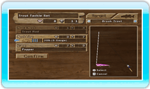

- Cómo cambiar el aparejo
Abre el Menú de pesca pulsando el Botón - y selecciona "Cambiar aparejo".
Seleccionar un pez objetivo: cambia tu pez objetivo pulsando el Botón + o el Botón -. No aparecerán los peces que aún no hayas desbloqueado
Seleccionar el grosor del sedal: resalta "Sedal del carrete" y pulsa a la izquierda o a la derecha en la cruz de control o en la palanca de control para cambiar el grosor del sedal. Los sedales más gruesos son más resistentes, pero menos atractivos para los peces. Los sedales finos son muy atractivos, pero pueden romperse con facilidad. ¡Intenta encontrar el equilibrio adecuado!
Seleccionar un señuelo: resalta "Señuelo" pulsando abajo o arriba en la cruz de control o en la palanca de control y pulsa el Botón A.
Profundidad del señuelo: los señuelos se clasifican según la profundidad.
- Superficie: flota sobre la superficie del agua
- Poca profundidad: flota justo debajo de la superficie del agua
- Media profundidad: flota a una profundidad media
- Profundo: flota justo encima del fondo
- Abisal: se hunde hasta el fondo
Resalta la profundidad que desees pulsando a la izquierda o a la derecha en la cruz de control o en la palanca de control y pulsa el Botón A para seleccionarla. Cuando hayas seleccionado una profundidad, escoge el señuelo que quieras utilizar en esa profundidad. Normalmente, querrás escoger el señuelo que tenga el mayor valor de atracción para tu pez objetivo.
|
|
|